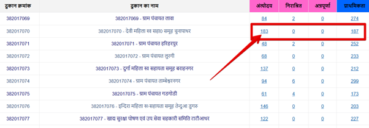

महत्वपूर्ण लिंक्स (fcs.cg.gov.in)
छत्तीसगढ़ जनभागीदारी राशन कार्ड की जानकारी आधार से देखने की प्रक्रिया
अगर आप अपने राशन कार्ड की जानकारी आधार नंबर के माध्यम से cg ration card download करना या देखना चाहते हैं, तो नीचे दिए गए आसान चरणों का पालन करें:
- सबसे पहले छत्तीसगढ़ खाद्य, नागरिक आपूर्ति एवं उपभोक्ता संरक्षण विभाग की आधिकारिक वेबसाइट https://fcs.cg.gov.in पर जाएं।
- होमपेज पर उपलब्ध "जनभागीदारी" विकल्प पर क्लिक करें।
- इसके बाद एक नया पेज खुलेगा, जिसमें राशन कार्ड संबंधी जानकारी देखने के लिए एक इनपुट बॉक्स (Search Box) दिखाई देगा।
- इस बॉक्स में आप अपना आधार क्रमांक या राशन कार्ड नंबर सावधानीपूर्वक दर्ज करें।
- फिर नीचे दिए गए "विवरण देखें" बटन पर क्लिक करें।
छत्तीसगढ़ जनभागीदारी: राशन कार्ड हितग्राहियों की विस्तृत जानकारी
यदि आप अपने या किसी अन्य व्यक्ति के राशन कार्ड की पूरी जानकारी (BPL List) बिना राशन कार्ड नंबर के देखना चाहते हैं, तो नीचे बताए गए आसान चरणों को अपनाएं:
- सबसे पहले, छत्तीसगढ़ खाद्य विभाग की आधिकारिक वेबसाइट https://fcs.cg.gov.in पर जाएं और होमपेज पर "जनभागीदारी" टैब पर क्लिक करें।
- एक नया पेज खुलेगा, जिसमें "राशन कार्ड संबंधित जानकारी" सेक्शन के अंतर्गत "राशनकार्ड हितग्राहियों की विस्तृत जानकारी" विकल्प को चुनें।
- इसके बाद एक सूची खुलेगी जिसमें आपको राज्य के सभी जिलों के नाम दिखाई देंगे। यहाँ अपने जिले का चयन करें।
- अगली स्क्रीन पर संबंधित विकासखंड (Block) या शहरी निकाय की सूची मिलेगी। अपने क्षेत्र के अनुसार ब्लॉक या नगर निकाय को चुनें।
- अब आपके क्षेत्र की सभी राशन दुकानों की सूची नजर आएगी। यहाँ आपको निम्न विवरण मिलेंगे:
- ✔ दुकान क्रमांक और नाम
- ✔ राशन कार्ड का प्रकार (अंत्योदय, प्राथमिकता, निराश्रित, एपीएल आदि)
 - जिस प्रकार के राशन कार्ड की जानकारी आप देखना चाहते हैं, उसके सामने दिख रही संख्या (Count) पर क्लिक करें।
- अब हितग्राहियों की पूरी सूची खुल जाएगी, जिसमें राशन कार्ड नंबर, मुखिया का नाम, पिता/पति का नाम, लिंग, पता और दुकान क्रमांक का विवरण होगा।
राशन कार्ड की ग्राम/वार्ड-वार कार्डवार जानकारी देखने की प्रक्रिया
यदि आप अपने गांव या वार्ड के अनुसार cg khadya.nic.in janbhagidari राशन कार्ड की पूरी सूची देखना चाहते हैं, तो नीचे दिए गए आसान चरणों का पालन करें:
- सबसे पहले, छत्तीसगढ़ खाद्य, नागरिक आपूर्ति एवं उपभोक्ता संरक्षण विभाग की आधिकारिक वेबसाइट https://fcs.cg.gov.in पर जाएं।
- होमपेज पर आपको "जनभागीदारी" विकल्प दिखेगा, उस पर क्लिक करें।
- एक नया पेज खुलेगा। इसमें "राशन कार्ड संबंधित जानकारी" सेक्शन के तहत "राशनकार्डों की ग्राम/वार्ड वार कार्डवार जानकारी" विकल्प को चुनें।
- इसके बाद एक और नया पेज आएगा, जहाँ आपको कुछ महत्वपूर्ण विकल्पों का चयन करना होगा:
- जिला
- क्षेत्र (ग्रामीण या शहरी)
- विकासखंड या नगरीय निकाय
- पंचायत या वार्ड
- सभी आवश्यक जानकारी भरने के बाद "जानकारी देखें" बटन पर क्लिक करें।
- अब आपके सामने चुने गए क्षेत्र की ग्राम/वार्ड-वार राशन कार्ड सूची प्रदर्शित हो जाएगी, जिसमें आप कार्डवार पूर्ण विवरण देख सकते हैं।
उचित मूल्य दुकान-वार राशन कार्ड की जानकारी देखने की प्रक्रिया
छत्तीसगढ़ में आप अपनी उचित मूल्य की दुकान (राशन दुकान) के अनुसार अपने राशन कार्ड का विवरण ऑनलाइन आसानी से देख सकते हैं। इसके लिए नीचे दिए गए सरल चरणों का पालन करें:
- सबसे पहले, छत्तीसगढ़ खाद्य, नागरिक आपूर्ति एवं उपभोक्ता संरक्षण विभाग की आधिकारिक वेबसाइट https://fcs.cg.gov.in/ पर जाएँ।
- वेबसाइट खुलने पर, मुख्य पृष्ठ (Home Page) पर दिए गए विकल्पों में से "जनभागीदारी" का चयन करें।
- इसके बाद एक नया पेज खुलेगा। यहाँ "राशन कार्ड संबंधित जानकारी" सेक्शन में जाकर "राशनकार्डों की उ.मू. दुकानवार कार्डवार जानकारी" विकल्प पर क्लिक करें।
- अब आपके सामने एक फॉर्म आएगा जिसमें आपको अपना जिला (शहरी या ग्रामीण) और नगरीय निकाय/विकासखंड का चयन करना होगा।
- ये सभी विकल्प भरने के बाद "जानकारी देखें" बटन पर क्लिक करें।

छत्तीसगढ़ खाद्य विभाग की वेबसाइट से जनभागीदारी राशन कार्ड देखने की प्रक्रिया
छत्तीसगढ़ शासन के खाद्य, नागरिक आपूर्ति एवं उपभोक्ता संरक्षण विभाग के पोर्टल के माध्यम से आप अपने राशन कार्ड की वर्तमान स्थिति और विवरण ऑनलाइन देख सकते हैं। इसकी पूरी प्रक्रिया नीचे दी गई है:
- सबसे पहले छत्तीसगढ़ शासन की आधिकारिक वेबसाइट https://fcs.cg.gov.in/ पर जाएं।
- वेबसाइट के होमपेज पर मुख्य मेनू में उपलब्ध “जनभागीदारी” टैब पर क्लिक करें।
- अब एक नया पेज खुलेगा जिसमें जनभागीदारी से संबंधित विभिन्न विकल्प दिखाई देंगे।
- यहाँ आपको "राशन कार्ड संबंधित जानकारी" सेक्शन में जाना होगा और वहां दिए गए "राशन कार्ड की जानकारी देखें" विकल्प पर क्लिक करना होगा।
- अब आपके सामने एक सर्च फॉर्म खुलेगा। यहाँ अपना राशन कार्ड नंबर दर्ज करें और फिर “खोजें” बटन पर क्लिक करें।
- बटन पर क्लिक करने के बाद, आपके राशन कार्ड से संबंधित सभी विवरण स्क्रीन पर प्रदर्शित हो जाएंगे।
आपको स्क्रीन पर क्या-क्या विवरण दिखाई देंगे?
- ✅ नवीनीकरण की स्थिति: आपका कार्ड रिन्यू हुआ है या नहीं।
- ✅ मुखिया का विवरण: कार्डधारी का नाम और उनके पिता/पति का नाम।
- ✅ भौगोलिक जानकारी: आपका जिला, विकासखंड, और ग्राम पंचायत।
- ✅ कार्ड का प्रकार: अंत्योदय, प्राथमिकता, निराश्रित या एपीएल।
- ✅ सदस्यों की जानकारी: परिवार के सभी सदस्यों का नाम और उनकी व्यक्तिगत डिटेल्स।
छत्तीसगढ़ जिलानुसार राशन कार्ड सूची (Janbhagidari List)
अपने जिले के नाम पर क्लिक करके सीधे आधिकारिक वेबसाइट fcs.cg.gov.in के माध्यम से राशन कार्ड विवरण और हितग्राही सूची देखें:
छत्तीसगढ़ खाद्य विभाग का मुख्य उद्देश्य एवं कार्य
छत्तीसगढ़ शासन का खाद्य, नागरिक आपूर्ति एवं उपभोक्ता संरक्षण विभाग राज्य में खाद्य सुरक्षा और किसानों के कल्याण के लिए समर्पित है। विभाग के मुख्य उद्देश्य निम्नलिखित हैं:
- 🌾 किसानों का कल्याण (MSP): विभाग का मुख्य कार्य राज्य के किसानों से धान और मक्का को न्यूनतम समर्थन मूल्य (MSP) पर खरीदकर उन्हें उनकी फसल का उचित मूल्य दिलाना और आर्थिक रूप से सशक्त बनाना है।
- 📦 खाद्य सुरक्षा (PDS): सार्वजनिक वितरण प्रणाली (PDS) के माध्यम से राज्य के जरूरतमंद और गरीब परिवारों को चावल, नमक, चीनी व अन्य जरूरी खाद्य सामग्री सुलभ कराकर उनकी खाद्य सुरक्षा सुनिश्चित की जाती है।
- ⚖️ मूल्य नियंत्रण: यह विभाग बाजार में आवश्यक वस्तुओं की उपलब्धता और उनकी कीमतों पर निरंतर निगरानी रखता है ताकि कालाबाजारी को रोका जा सके।
- 🛡️ उपभोक्ता संरक्षण: विभाग प्रदेश के नागरिकों के उपभोक्ता अधिकारों की रक्षा करने और उन्हें जागरूक करने के लिए सतत रूप से कार्य करता है।
शीघ्र संपर्क (Contact)
विभाग: खाद्य, नागरिक आपूर्ति एवं उपभोक्ता संरक्षण विभाग
📍 पता:
ब्लॉक-2, तृतीय तल, इंद्रावती भवन, अटल नगर, नया
रायपुर
📞 फ़ोन:
0771-2511974
✉️ ईमेल:
dirfood.cg@gov.in